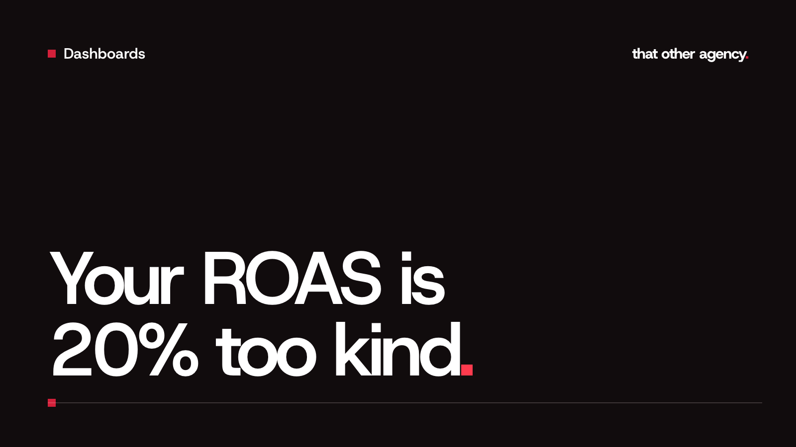

Dashboards
ROAS and VAT: why your UK Shopify numbers can look better than they are

Should ROAS include VAT? It is a fair question, and the answers online contradict each other, mostly because they are written for American stores where sales tax works differently. For a UK Shopify brand the answer depends on one thing: whether you are VAT registered. This guide gives the rule, a worked example in pounds, and the places VAT quietly creeps into the numbers you look at every week.
Should ROAS include VAT?
ROAS (return on ad spend) is revenue divided by ad spend. The whole point of it is to tell you whether your ads pay for themselves. So the revenue in that sum should be money your business keeps.
Once you are VAT registered, every order you take includes VAT that you collect and pass on to HMRC. On a product priced at £60 including VAT at 20%, £10 is VAT and £50 is yours. Counting the full £60 as revenue treats HMRC's share as if it were your sales.
If you are not VAT registered (taxable turnover under the £90,000 threshold, unless you have registered voluntarily), you charge no VAT, so there is nothing to strip out. Your revenue is your revenue. Just be ready for your ROAS to fall the day you register, even though nothing about your ads has changed.
A worked example in pounds
Take a VAT registered brand selling standard rated products. In one week it spends £1,000 on Meta ads, and the orders those ads brought in come to £4,800 including VAT.
- ROAS including VAT: £4,800 ÷ £1,000 = 4.8
- Revenue excluding VAT: £4,800 ÷ 1.2 = £4,000
- ROAS excluding VAT: £4,000 ÷ £1,000 = 4.0
Same ads, same week, same orders. One number says 4.8, the other says 4.0. Neither is a typo, but only the second one tells you what the ads earned the business.
Notice the gap. Dividing by 1.2 takes off a sixth of the total, about 16.7%. Put the other way round, the VAT inclusive figure is 20% higher than the true one. That is where the title comes from.
Where VAT hides in your numbers
The tricky part is that different tools treat VAT differently, and they rarely say which they are doing.
- Shopify. Shopify's sales reports list taxes on their own line, and the "Total sales" figure includes them. If you take the big number from the top of the report, you are usually taking the VAT inclusive one. Use net sales, which leaves taxes out.
- Ads Manager and Google Ads. The purchase value an ad platform reports is whatever your store's tracking sends it. Depending on the app and its settings, that is often the order total a customer paid, which can include VAT and sometimes shipping. The platform has no idea which part belongs to HMRC.
- Ad spend. Check your Meta and Google invoices. If your ad accounts carry your VAT number, the invoices usually show no UK VAT added, so the spend figure is already a net cost. If they do show VAT that you reclaim, use the figure before VAT so both sides of the sum match.
The easiest check is a test order. Buy something on your own store, then compare the value Shopify records with the value that turns up in Ads Manager. If the ad platform shows the full amount you paid, its ROAS includes VAT.
The mistake that costs money: mixing the two
Reporting a flattering ROAS is annoying. Setting targets on one basis and measuring on the other is what actually loses money.
Say your products make a 50% margin on the price excluding VAT, before ads. To break even on ad spend you need a ROAS of 2.0 on revenue excluding VAT. If Ads Manager is reporting VAT inclusive revenue, that same break even point shows up as 2.4.
So if your target says 2.0 and a campaign sits at 2.2 in Ads Manager, it looks safely above break even. Take the VAT out and it is really about 1.83, losing money on every sale. Scale it because it "beats target" and you scale the loss. This is the most common reporting problem we see when we first look at a UK brand's numbers.
How to get one honest number
- Pick a basis and write it down. Revenue excluding VAT, and decide whether shipping and discounts are in or out. Most brands are better off with product revenue after discounts, excluding VAT and shipping.
- Use the same basis for every target. Break even ROAS, target CPA and MER should all be worked out on the same revenue figure you report on.
- Watch your product mix. Dividing by 1.2 only works when everything you sell is standard rated. Some products are zero rated or reduced rate, such as many children's clothes and some food. If you sell a mix, use the VAT Shopify actually recorded, not a flat 20%.
- Trust Shopify for revenue, the platforms for direction. Ads Manager is useful for comparing one ad with another. For what the business earned, start from Shopify's net sales and your total ad spend.
What we do on client dashboards
Every performance dashboard we build takes revenue straight from Shopify, excluding VAT, and puts it next to spend pulled from each ad platform. ROAS, MER and cost per new customer are all worked out on that one basis, so the numbers on the screen are the ones that land in your bank account. You can click around a working example with made up data in our live dashboard demo. If you want the same for your own store, every build starts with a consultation and a fixed quote.
Frequently asked questions
Should ROAS include shipping?
Usually not. Shipping you charge mostly covers what you pay a courier, so counting it as revenue inflates ROAS in the same way VAT does. If you offer free shipping, there is nothing to strip out, but remember the courier cost when you work out your margin.
Does the ROAS in Meta Ads Manager include VAT?
It includes whatever your store's tracking sends as the purchase value. For many Shopify stores that is the order total the customer paid, VAT included. A single test order will tell you which yours is.
I am not VAT registered. Do I need to worry about this?
Not for now, because none of your revenue is VAT. Keep it in mind as you grow: once you register, the same sales are worth a sixth less to you, and your break even ROAS goes up with it.